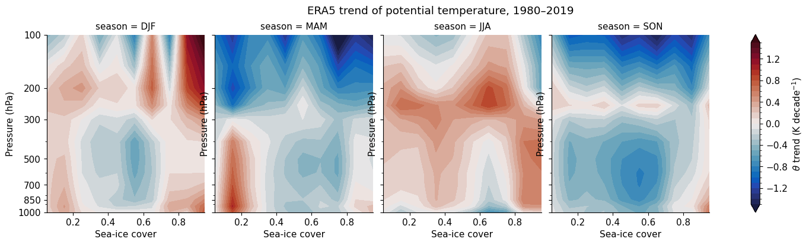
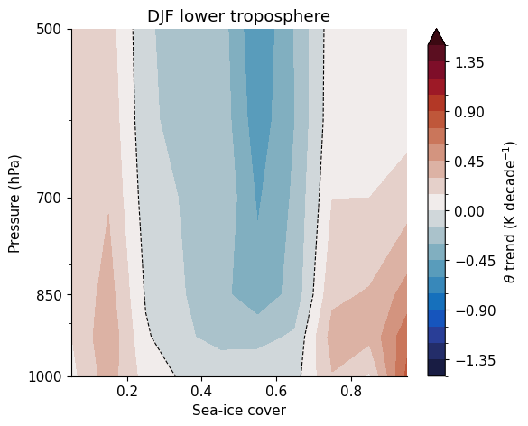
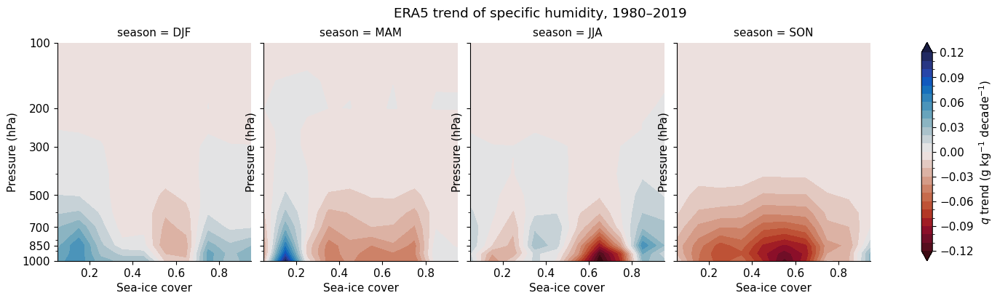
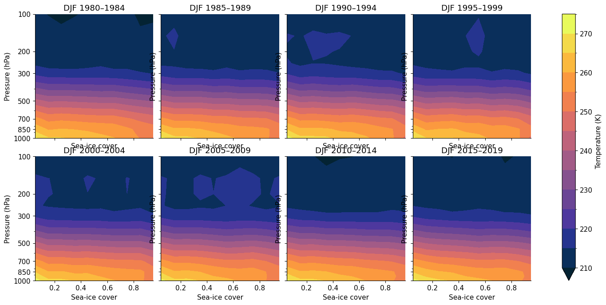
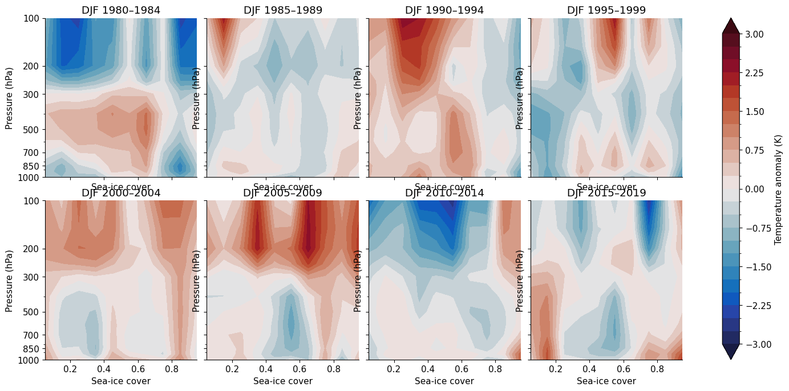
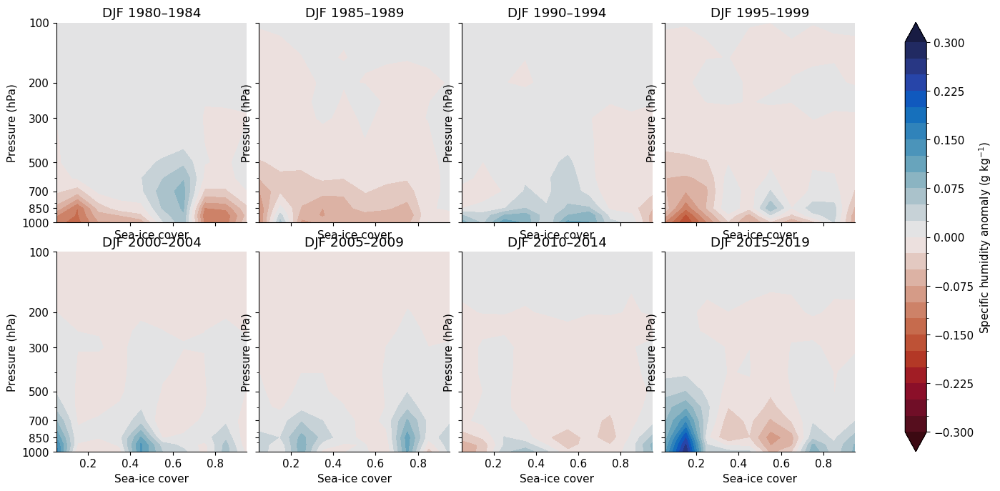

Arctic atmosphere in a warming climate: ERA5 sea-ice profiles#
Linear trends of ERA5 temperature and humidity profiles north of 60° N, 1980–2019, binned by season and sea-ice cover. It needs the file written by ERA5 sea-ice profiles and cmocean.
The Arctic warms several times faster than the global mean (Arctic amplification). How the vertical structure of temperature and humidity responds to declining sea ice is a central question of the (AC)³ project (Arctic Amplification: Climate Relevant Atmospheric and Surface Processes, and Feedback Mechanisms).
Dataset: data/era5_sea_ice_to_libradtran.nc
Dimension |
Description |
|---|---|
|
DJF · MAM · JJA · SON |
|
middle of a five-year period (1980–1984, …, 2015–2019) |
|
sea-ice cover bin centre (0.05 … 0.95) |
|
pressure (hPa) |
t (temperature, K) and q (specific humidity, kg kg⁻¹) are bin means of a subsample of the 6-hourly ERA5 data (see ERA5 sea-ice profiles). A linear fit along valid_time gives the trend per decade. With eight five-year means the trends are indicative only; no significance test is made.
import cmocean
import matplotlib.pyplot as plt
import matplotlib.ticker as mticker
import numpy as np
import xarray as xr
plt.rcParams.update({"font.size": 11, "axes.spines.top": False, "axes.spines.right": False})
ds = xr.open_dataset("data/era5_sea_ice_to_libradtran.nc")
ds["theta"] = ds.t * (1000 / ds.pressure_level) ** 0.286 # dry potential temperature (K)
ds["q_gkg"] = ds.q * 1000 # g kg-1
anomaly = ds - ds.mean("valid_time") # departure from the 1980-2019 mean
PER_DECADE = 1e9 * 3600 * 24 * 365.25 * 10 # polyfit slope is per ns
trend = ds[["theta", "q_gkg"]].polyfit("valid_time", deg=1).sel(degree=1) * PER_DECADE
def style(axes, ylim=(1000, 100)):
for ax in np.ravel(axes):
ax.set_yscale("log")
ax.set_ylim(*ylim)
ticks = [p for p in (1000, 850, 700, 500, 300, 200, 100) if ylim[1] <= p <= ylim[0]]
ax.set_yticks(ticks, [str(p) for p in ticks])
ax.yaxis.set_minor_formatter(mticker.NullFormatter())
ax.set_xlabel("Sea-ice cover")
ax.set_ylabel("Pressure (hPa)")
~/.local/lib/python3.10/site-packages/tqdm/auto.py:21: TqdmWarning: IProgress not found. Please update jupyter and ipywidgets. See https://ipywidgets.readthedocs.io/en/stable/user_install.html
from .autonotebook import tqdm as notebook_tqdm
Potential temperature trends#
Dry potential temperature \(\theta = T\,(1000\,\mathrm{hPa}/p)^{0.286}\) removes the dry-adiabatic lapse rate, which makes the vertical structure easier to compare across seasons and ice fractions.
fg = trend.theta_polyfit_coefficients.plot.contourf(
x="sea_ice_cover", y="pressure_level", col="season", levels=np.arange(-1.5, 1.51, 0.1),
cmap=cmocean.cm.balance, figsize=(15, 4),
cbar_kwargs={"label": r"$\theta$ trend (K decade$^{-1}$)"},
)
style(fg.axs)
fg.fig.suptitle("ERA5 trend of potential temperature, 1980–2019", y=1.03);

The pattern is noisy, and it should be read with care: a fixed sea-ice bin does not stay in one place. As the ice edge retreats north, a given bin samples more northerly, colder grid cells later in the record, which adds a cooling and drying tendency to the trends of the partly ice-covered bins. In winter the clearest signal is near-surface warming over open water and over nearly closed ice (cover > 0.8), with weak cooling in the intermediate bins.
fig, ax = plt.subplots(figsize=(6, 5))
djf = trend.theta_polyfit_coefficients.sel(season="DJF")
djf.plot.contourf(x="sea_ice_cover", y="pressure_level", levels=np.arange(-1.5, 1.51, 0.15),
cmap=cmocean.cm.balance, ax=ax,
cbar_kwargs={"label": r"$\theta$ trend (K decade$^{-1}$)"})
djf.plot.contour(x="sea_ice_cover", y="pressure_level", levels=[0], colors="k",
linewidths=0.8, linestyles="--", ax=ax)
style(ax, ylim=(1000, 500))
ax.set_title("DJF lower troposphere");

Specific humidity trends#
fg = trend.q_gkg_polyfit_coefficients.plot.contourf(
x="sea_ice_cover", y="pressure_level", col="season", levels=np.linspace(-0.12, 0.12, 25),
cmap=cmocean.cm.balance_r, figsize=(15, 4), extend="both",
cbar_kwargs={"label": r"$q$ trend (g kg$^{-1}$ decade$^{-1}$)"},
)
style(fg.axs)
fg.fig.suptitle("ERA5 trend of specific humidity, 1980–2019", y=1.03);

Humidity changes are confined to the lowest few hundred hPa, where nearly all the water vapour is. Their sign varies with season and sea-ice bin; the decreases in the intermediate bins in summer and autumn are consistent with the northward shift of these bins described above.
Winter temperature by period#
The absolute temperature is what enters a radiative transfer simulation: DJF, one panel per five-year period.
fg = ds.t.sel(season="DJF").plot.contourf(
x="sea_ice_cover", y="pressure_level", col="valid_time", col_wrap=4,
levels=np.arange(210, 276, 5), cmap=cmocean.cm.thermal, figsize=(15, 7),
cbar_kwargs={"label": "Temperature (K)"},
)
style(fg.axs)
for ax, t in zip(fg.axs.flat, ds.valid_time.dt.year.values):
ax.set_title(f"DJF {t - 2}–{t + 2}")

Winter anomalies by period#
Departure of each five-year DJF mean from the 1980–2019 mean, for temperature and specific humidity.
for var, label, cmap, vmax in [
("t", "Temperature anomaly (K)", cmocean.cm.balance, 3.0),
("q_gkg", "Specific humidity anomaly (g kg$^{-1}$)", cmocean.cm.balance_r, 0.3),
]:
fg = anomaly[var].sel(season="DJF").plot.contourf(
x="sea_ice_cover", y="pressure_level", col="valid_time", col_wrap=4,
levels=np.linspace(-vmax, vmax, 25), cmap=cmap, extend="both", figsize=(15, 7),
cbar_kwargs={"label": label},
)
style(fg.axs)
for ax, t in zip(fg.axs.flat, ds.valid_time.dt.year.values):
ax.set_title(f"DJF {t - 2}–{t + 2}")

